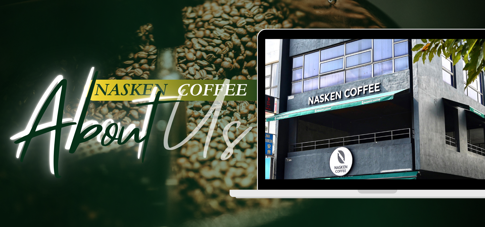

OUR STORY
Nasken Coffee is already a familiar coffee shop name for Malaysia communities especially in
Kelantan and Terengganu. Nasken Coffee was established in 2019 by Mohd Nazif Bin Ab Aziz,
who acting as Chief Executive Officer and he also invited his best friend, Mohd Hairi Bin Mat Isa
to join him in opened the coffee house at Pasir Tumbuh in Kota Bharu, Kelantan as Chief Operating
Officer. On 27th July 2020, they successfully launched new outlet in Tanah Merah, Kelantan and
at the end of year, they opened the 10th outlet at TROIKA in Kota Bharu, Kelantan on 31st
December.
Nasken Coffee is a well-known coffee house in Kelantan as it already has operated 9 outlets
in Kelantan only. In 2020 at TROIKA KB branch, Nasken Coffee was visited by YB Dato Sri Dr.
Haji Wan Junaidi, the Minister of Entrepreneur and Cooperative Development who also show his
talents in making the latte art himself and he also support the young businessman. Moreover,
Nasken Coffee also provided own food delivery system to deliver their product which coffee drinks
or food in front of customers house. They also using food panda services to deliver their food and
drinks to the customers.
Furthermore, Nasken Coffee has a main goal to open 40 new outlets across Malaysia in
2023. Right now, they already had operated 30 outlets of coffee house on Peninsular Malaysia
including Kelantan, Terengganu, Kuala Lumpur, Pahang and Selangor. Nasken Coffee offered
numerous kinds flavors of coffee and non-coffee drinks such as Americano, Cappuccino, Latte,
Mocha, Chocolate, Tea and more. Besides, they also served variety menu of tasty foods including local food and western food such as Chicken Chop, Nasi Lemak, Pasta, Spaghetti and much more
menu.
Eventually, Nasken Coffee provided reservation whether for small or large number
customers. For instances, the reservation for the birthday celebration or event, company dinner,
school or college reunion, etc. Additionally, the reservation will be opened up from 10.00 a.m.
until 12.00 p.m. which is very convenience for people to reserve anytime and anywhere at the
Nasken Coffee outlets coffee shop.
- Charming and attractive by featuring the variety of coffee, non-coffee as well as delicious
foods.
- Comfortable by providing a clean and cozy place for customers.
LOGO BRANDING
Nasken Coffee create and design their logo by choosing a picture of coffee beans and the
combination of green and white as the brand colors which give a certain meaning based on the
image and colors chosen. The picture of coffee beans can define Nasken Coffee as the brand that
represents the coffee as their product which offered various kind of coffee types and flavors at their
café outlets or coffee house. Meanwhile, the colors of green reflect as the colors that give a
freshness and natural feeling to the customers who looks the Nasken Coffee logo while the white
colors represent as the colors that show the purity, peace and elegance to the logo and brand itself.
Therefore, Nasken Coffee able to create a logo which can build the awareness of the customers
towards their brand.